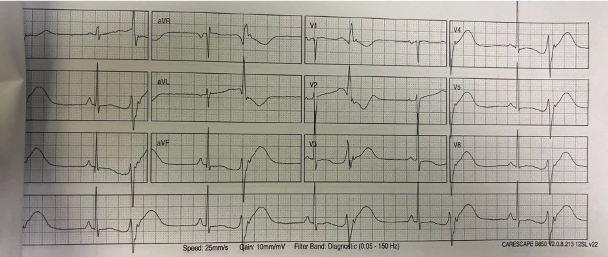
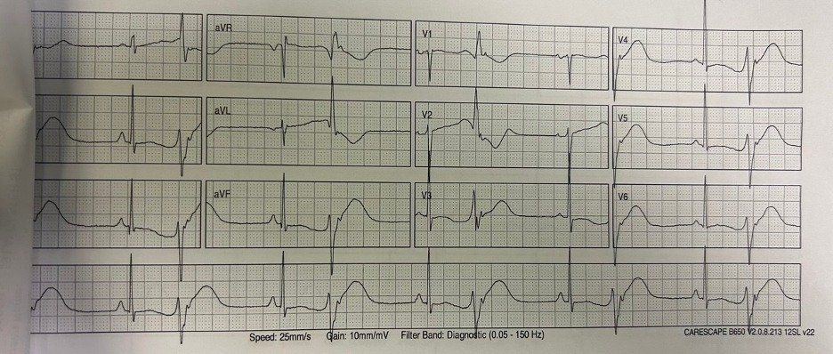
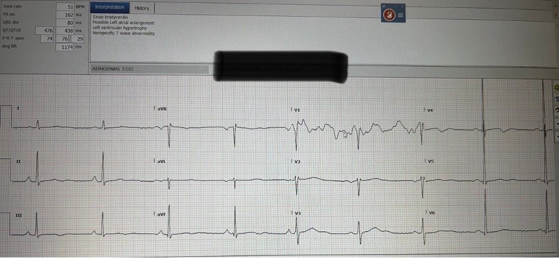
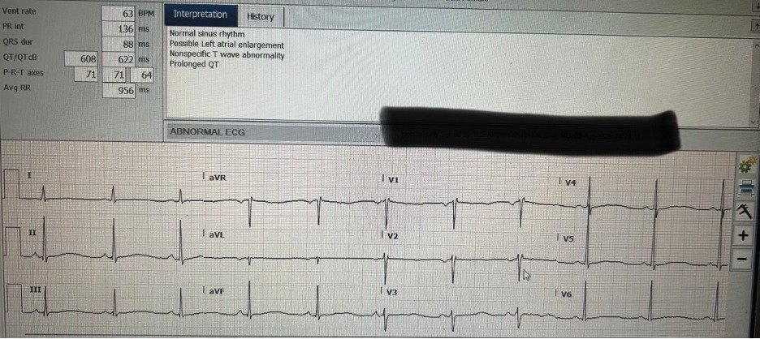
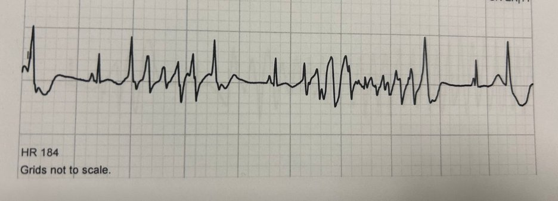
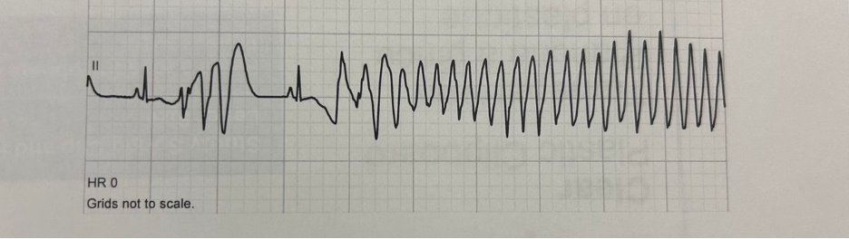
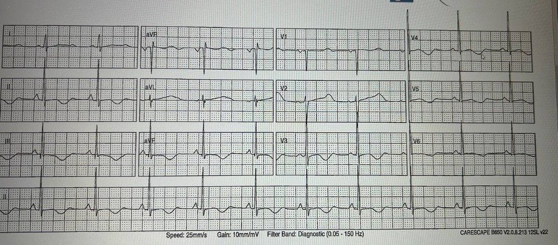
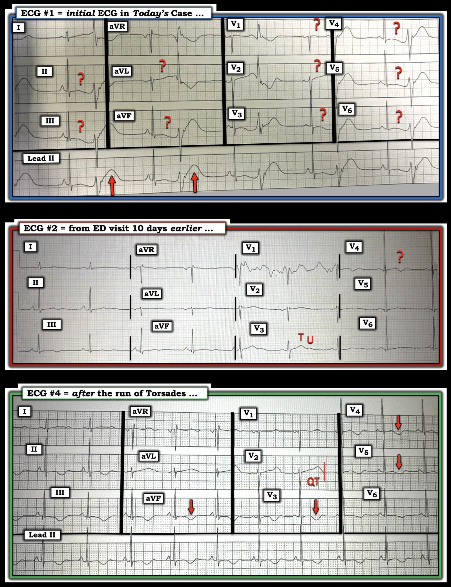
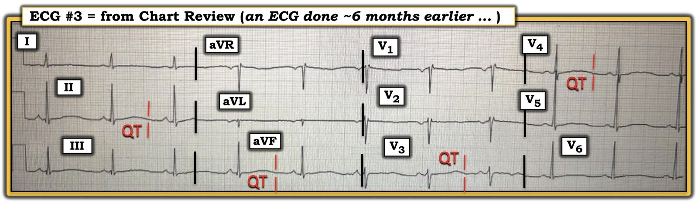

21/07/2026 — Các cơn co giật tái diễn ở một phụ nữ ngoài 40 tuổi
Bản dịch tiếng Việt của bài "Recurrent Seizures in a 40-something woman" – Dr. Smith’s ECG Blog. Giữ nguyên toàn bộ 8 hình ảnh của bản gốc.


Tác giả: Matthew McArthur
Tôi khám một phụ nữ 40 tuổi bị một cơn mất ý thức kéo dài ~3 phút, có người chứng kiến, tại nhà, ngay sau nửa đêm. Bạn đời của cô cho biết cô đột ngột mất ý thức, mắt trợn ngược, co giật vài lần, sùi bọt mép, trở nên rất tái, rồi xuất hiện kiểu thở hấp hối (agonal) và ngừng thở. Anh ấy đã gọi đội cấp cứu ngoài viện (EMS). Toàn bộ cơn kéo dài khoảng 3 phút và cô tỉnh lại trước khi EMS đến. Khi EMS đến, cô tỉnh, GCS 15, sinh hiệu bình thường. Cô là người sử dụng fentanyl, thừa nhận đã hút fentanyl vào đầu buổi tối hôm đó, và đang dùng methadone và hydromorphone theo đơn với liều cao để điều trị rối loạn sử dụng opioid (Opioid Use Disorder). Cô đã dùng các thuốc này vài năm, gần đây không thay đổi thuốc. Ngoài ra cô khỏe mạnh, không có bệnh cấp tính, không buồn nôn, nôn hay tiêu chảy.
Hãy xem điện tâm đồ ban đầu của cô:


Điện tâm đồ ban đầu của cô rõ ràng bất thường: nhịp xoang với PVC/nhịp đôi (bigeminy) và QT dài. Hãy nhìn kỹ các sóng T sau các nhát xoang, bị PVC cắt ngang đột ngột. Điện tâm đồ này cho thấy hiện tượng R trên T (R on T) và có nguy cơ cao sắp xảy ra xoắn đỉnh (Torsades de Pointe).
Sau khi xem điện tâm đồ này cùng với bệnh sử như vậy, tôi đã cho magnesi sulfat tĩnh mạch theo kinh nghiệm, cho cô theo dõi từ xa (telemetry) và dán sẵn miếng điện cực của máy khử rung cho cô.
Smith: Các PVC khá kỳ dị với sóng T phình to khổng lồ. Xem đường link bên dưới để thấy những sóng T còn kỳ dị hơn nữa liên quan đến bệnh lý này.
Các lần khám trước
Khai thác thêm bệnh sử cho thấy cô đã có các cơn ngất đột ngột <1 phút, đôi khi kèm tiểu không tự chủ, tư thế co cứng (tonic posturing) và giật cơ kiểu myoclonic (bạn đời lo là động kinh), lúc có lúc không trong 2 tuần qua, tổng cộng khoảng 10 cơn. Ngoài các cơn, cô không có triệu chứng và cảm thấy như bình thường. Cô đã được khám tại một khoa cấp cứu (ED) địa phương 10 ngày trước, sau một trong các cơn này — bạn đời đưa cô đến vì lo cô bị co giật. Ở lần khám này, cô được cho về nhà với xét nghiệm máu và CT sọ não không có gì đáng chú ý; bác sĩ cấp cứu cho biết ông nghi đây là các cơn rối loạn ý thức thứ phát do sử dụng ma túy bất hợp pháp, vì bệnh nhân thừa nhận có dùng fentanyl để tiêu khiển.
Đây là điện tâm đồ lúc đó.


Máy tính đọc QTc là 438, nhưng theo tôi các sóng T có biên độ thấp và hai pha (đặc biệt rõ ở V4-V5), khiến kết quả đọc bằng máy tính bị sai lệch, và QTc rõ ràng DÀI HƠN NHIỀU so với 438; khi tính cả sóng T hai pha, ta thấy khoảng QT dài hơn hẳn 3 ô lớn (600ms). Điều này đã không được bác sĩ cấp cứu ghi nhận 10 ngày trước.
Smith: Hơn nữa, khi tần số tim dưới 60, việc hiệu chỉnh QT làm NGẮN QTc lại. Không khuyến cáo hiệu chỉnh theo tần số tim khi tần số dưới 60. Toán đồ QT (QT nomogram), vốn dành riêng cho QT dài mắc phải do thuốc, không hiệu chỉnh theo tần số tim chậm. Hơn nữa, khi bệnh nhân có tần số tim chậm, họ dễ bị xoắn đỉnh “phụ thuộc khoảng ngưng” (pause dependent) hơn. Xem bài này để biết mọi điều bạn muốn biết về khoảng QT: QT Correction Formulas Compared to The Rule of Thumb (“Half the RR”)
Ngoài ra:
Xem lại hồ sơ bệnh án cho thấy cô đã được khám tại một khoa cấp cứu địa phương 6 tháng trước vì các cơn ngất. Một lần nữa cô được cho về, bác sĩ cấp cứu nghi rằng các cơn mất ý thức liên quan đến sử dụng ma túy bất hợp pháp. Ở lần khám này, điện tâm đồ của cô như sau.


QT dài, lần này được máy tính nhận diện đúng, đã không được bác sĩ cấp cứu ghi nhận vào thời điểm đó.
Smith: Phần lớn thời gian, máy tính không đo chính xác khoảng QT và cho kết quả âm tính giả. Hãy luôn tự đo QT!!
Xem các ca này, cho thấy thuật toán thông thường đo QT tệ đến mức nào và hậu quả ra sao:
Xem: A New Seizure in a Healthy 20-something
Xem: Syncope in a 20-something woman
Xem: Syncope and Bradycardia
Quay lại với ca bệnh
Cô có một cơn ngất thoáng qua <20 giây tại khoa cấp cứu. Theo dõi từ xa xác nhận đó là xoắn đỉnh, tự hết mà không cần khử rung.
Đây là dải nhịp theo dõi từ xa của cô quanh thời điểm ngất:




Đây là điện tâm đồ sau cơn xoắn đỉnh, không có PVC, một lần nữa cho thấy QT dài, với các sóng T hai pha thấy rõ hơn nhiều.


Magnesi trong giới hạn bình thường và kali hơi thấp (3.1); cô được bù cả Mg và KCl trong thời gian tôi điều trị.
Tôi đã hội chẩn với trung tâm tim mạch gần đó để chuyển bệnh nhân đến Đơn vị Chăm sóc Tim mạch (CCU) (10 phút đi xe). Bệnh nhân bị ngừng tim do xoắn đỉnh (TdP) ngay sau khi đến CCU, được khử rung thành công với một cú sốc. Máy tạo nhịp qua đường tĩnh mạch đã được đặt để tạo nhịp vượt tần số (overdrive pacing).
Bệnh nhân được cai dần methadone và QT trở về bình thường trong vài ngày, lúc đó máy tạo nhịp qua đường tĩnh mạch được rút và bệnh nhân được xuất viện.
Để phòng ngừa cấp thời xoắn đỉnh tái phát, nếu được xử trí lại ca này, tôi sẽ bắt đầu tạo nhịp vượt tần số bằng truyền isoproterenol ngay tại khoa cấp cứu trong khi chờ nhập khoa tim mạch, như được mô tả trong bài gần đây này.
Điều cần nhớ
- xem xét kỹ điện tâm đồ khi mất ý thức (LOC) không giải thích được: nếu QT dài, cho magnesi theo kinh nghiệm và chuẩn bị tạo nhịp vượt tần số
- methadone là nguyên nhân gây QT dài
- máy tính có thể đọc sai QTc
- đừng vội gạt bỏ cơn mất ý thức là do sử dụng chất gây nghiện, hãy khai thác bệnh sử thật kỹ
- ngất hay co giật (ngay cả trong những trường hợp rõ ràng là ngất, người chứng kiến không có chuyên môn thường lo là co giật vì thấy giật cơ, tiểu không tự chủ, mắt trợn ngược, v.v.). Xem các lưu ý bên dưới:
Lưu ý về tư thế co cứng và giật cơ (myoclonic jerks)
Tôi đã không còn đếm được bao nhiêu lần trong sự nghiệp còn non trẻ của mình, gia đình bệnh nhân chứng kiến một cơn ngất, kể cả nhiều ca ngừng tim do rung thất (V Fib), và nói với tôi rằng họ lo người thân của mình bị co giật, chủ yếu là do tư thế co cứng và giật cơ, vốn cực kỳ phổ biến trong ngất.
Nghiên cứu này trên tạp chí Neurology công bố năm 2018 đã so sánh các bản ghi video và EEG của 65 ca ngất gây ra bằng nghiệm pháp bàn nghiêng và 50 ca co giật tại một trung tâm học thuật ở Hà Lan. Tư thế co cứng có mặt trong 65% các cơn ngất và giật cơ có mặt trong 51% các cơn ngất. Trong nghiên cứu này, không cơn co giật nào có < 10 lần giật cơ, và không cơn ngất nào có > 20 lần, dẫn đến việc các tác giả đề xuất quy tắc 20/10 để phân biệt co giật với ngất dựa trên số lần giật cơ được chứng kiến.
Sau giai đoạn giật cơ và tư thế co cứng, mọi cơn ngất đều tiến triển đến mất trương lực (atonia), trong khi không cơn co giật nào có mất trương lực. Giật cơ trong co giật có tính nhịp nhàng hơn so với giật cơ trong ngất.
Lưu ý về tiểu không tự chủ trong ngất
Người ta thường dạy rằng tiểu không tự chủ làm tăng khả năng là co giật, tuy nhiên tiểu không tự chủ có thể xảy ra với nhiều nguyên nhân mất ý thức khác nhau. Tổng quan hệ thống và phân tích gộp này trên tạp chí Seizure năm 2013 đã xem xét các nghiên cứu đánh giá sự hiện diện của tiểu không tự chủ ở cả cơn co giật động kinh lẫn các tình trạng giống động kinh nhưng không phải động kinh (ngất hoặc cơn không động kinh do tâm lý). Nghiên cứu này cho thấy sự hiện diện của tiểu không tự chủ không có giá trị chẩn đoán trong phân biệt co giật với ngất hoặc cơn không động kinh.
Một ca QT dài khác do methadone: What are these bizarre bigeminal PVCs??
Hãy xem tất cả những PVC kỳ dị này (nhiều ví dụ tại đường link này): What are these bizarre bigeminal PVCs??
= = =
======================================
BÌNH LUẬN CỦA TÔI, bởi KEN GRAUER, MD (21/7/2026):
Tôi thấy các điện tâm đồ trong ca hôm nay khá thử thách. Dù vậy — tôi đã đi đến kết luận tương tự như các bác sĩ McArthur và McLaren mô tả, tuy con đường đi đến đó của tôi có hơi khác.
- Vì mục đích thảo luận học thuật — tôi tập trung bình luận vào con đường khác của mình. Tôi minh họa quan điểm của mình trong Hình 1 — trong đó tôi đã tái hiện 3 trong số các điện tâm đồ của ca hôm nay (cùng một cái nhìn hồi cứu vào điện tâm đồ 12 chuyển đạo thứ 4 được ghi trên bệnh nhân này, trong Hình 2).
= = =
QTc trong các bản ghi hôm nay là bao nhiêu?
Tôi thấy đặc biệt khó xác định QTc “thật” ở 3 trong số 4 bản ghi 12 chuyển đạo hôm nay. Dù vậy — khoảng QT hiệu chỉnh thật sự dài bao nhiêu trong 3 bản ghi này không thực sự quan trọng — vì:
- i) Hầu hết các opioid đều có thể kéo dài QTc — đặc biệt khi các thuốc này được dùng với lượng lớn (Hu và cs. — Tạp chí Cardiovasc Toxicol 24(5):472-480, năm 2024) — và — việc bệnh nhân hôm nay dùng methadone và hydromorphone theo đơn với “liều cao” đã biết (để điều trị rối loạn sử dụng opioid) — cùng với việc bệnh nhân thừa nhận dùng fentanyl để tiêu khiển vào buổi tối ghi điện tâm đồ #1 — làm tăng thêm nguy cơ QTc kéo dài và độc tính trên tim đi kèm;
- ii) Rối loạn điện giải đi kèm có tác dụng hiệp đồng với hiệu ứng kéo dài QTc của 3 opioid liều cao (và hiệp đồng làm tăng độc tính trên tim) — với ghi nhận hạ kali máu ( = 3.1 mEq/L) đáng kể vào ngày ghi điện tâm đồ #1 và #3 — và với sóng U gợi ý K+ thấp vào ngày ghi điện tâm đồ #2.
- iii) Các bác sĩ McArthur và McLaren đã ghi lại rất tốt dải nhịp trong một cơn xoắn đỉnh (với bệnh sử gợi ý mạnh có nhiều cơn ngất — trong đó một số cơn nhiều khả năng cũng là xoắn đỉnh).
- iv) Với xoắn đỉnh đã được ghi nhận (và nghi ngờ loạn nhịp này đã tái phát nhiều lần) — nhịp chậm trên điện tâm đồ — và việc dùng liều cao 3 opioid đã biết là gây kéo dài QTc, được hạ kali máu làm tăng thêm tác dụng ==> chỉ định bù K+ và Mg++ tĩnh mạch như các biện pháp điều trị xoắn đỉnh là chắc chắn, bất kể thời khoảng QTc khi đó là bao nhiêu.
- v) Bất kỳ tình trạng QT kéo dài rõ rệt nào nếu có có lẽ sẽ hết sau khi bù K+, điều trị Mg++ tĩnh mạch và giảm liều opioid một cách thận trọng trong mức có thể.
= = =
3 điện tâm đồ trong Hình 1:
- Điện tâm đồ #1: Nhịp là nhịp đôi thất (Lưu ý dẫn truyền VA ngược dòng 1:1, thể hiện bằng khía âm sau mỗi PVC ở chuyển đạo II dài). Tôi không thấy điểm kết thúc sóng T của các nhát xoang được xác định rõ ở bất kỳ chuyển đạo nào trong 12 chuyển đạo (các dấu hỏi màu ĐỎ). Thay vào đó — sóng ST-T gần như không có hình dạng rõ ràng (dẹt). Vì vậy — tôi không biết phải đo khoảng QT như thế nào.
- Dù đã nói như trên — tôi rất nghi ngờ có QT kéo dài vì các opioid là yếu tố thuận lợi và vì tình trạng hạ kali máu.
- Suy đoán của TÔI: Tôi thấy kích thước và hình dạng sóng T của các PVC trong điện tâm đồ #1 thật thú vị! Qua nhiều năm, chúng tôi đã công bố một số ca OMI cấp trong đó sóng ST-T không đặc hiệu ở các nhát dẫn truyền từ xoang — nhưng lại có giá trị chẩn đoán OMI cấp dựa trên sóng ST-T của các PVC! Mặc dù tôi chưa thấy điều này được báo cáo — tôi nghi rằng một hiện tượng tương tự đang xảy ra ở đây, ở chỗ sóng T của mỗi PVC trong điện tâm đồ #1 trông lớn bất cân xứng, kèm một QTc hẳn phải kéo dài rõ rệt mà đơn giản là không thấy được khi đánh giá các nhát dẫn truyền từ xoang.
= = =
Hình 1: Để thuận tiện so sánh — tôi đã đánh nhãn và đặt 3 trong số 4 điện tâm đồ 12 chuyển đạo hôm nay cạnh nhau.


= = =
- Điện tâm đồ #2: Nhịp là nhịp chậm xoang với tần số ~50/phút. Nhiễu làm hỏng chuyển đạo V1. Ngoại trừ chuyển đạo V3 và V4 — hầu hết sóng ST-T ít có hình dạng rõ ràng. Điều này một lần nữa khiến việc xác định điểm kết thúc sóng T ở hầu hết các chuyển đạo trở nên khó khăn. Dù vậy — tôi thấy chuyển đạo V3 đáng chú ý vì có sóng T và sóng U — và xét đến nhịp chậm, tôi không cho rằng khoảng QT nhất thiết bất thường (tức là, có kéo dài “Q-U” — nhưng theo mắt tôi, không nhất thiết là kéo dài QT). Tôi kém chắc chắn hơn về cách diễn giải sóng âm ở chuyển đạo V4, vì có nhiễu ở những chỗ khác và không có chuyển đạo trước tim nào khác có sóng âm này.
- LƯU Ý: Chúng tôi đã thêm Công cụ tính QTc vào Menu trên cùng của mọi trang trên Dr. Smith’s ECG Blog (— BẤM VÀO ĐÂY — nằm trong thẻ Tools & Guides). Như thấy rõ từ 5 công thức tính QTc được dùng nhiều nhất mà chúng tôi trình bày — không có sự đồng thuận chung, và không có phương pháp hoàn hảo để tính QTc. Đáng tiếc — độ chính xác của ước tính QTc đặc biệt giảm khi tần số tim chậm — điều này trên lâm sàng lại trở nên ít quan trọng hơn vì bản thân nhịp chậm đã là yếu tố thuận lợi gây xoắn đỉnh. Dù vậy — tôi lấy chuyển đạo V3 trong điện tâm đồ #2 làm chuyển đạo cho các mốc đo thời khoảng QT đáng tin cậy nhất, và vì vậy tôi không ước tính QTc vượt quá mức giới hạn, xét đến tần số tim chậm ~50/phút.
- = = =
- Điện tâm đồ #4: Có nhịp xoang với tần số ~60/phút. Cuối cùng chúng ta cũng thấy rõ đoạn ST và sóng T trong bản ghi này — và QTc kéo dài rõ rệt. Dù vậy — bệnh nhân này vừa có một cơn xoắn đỉnh ngay trước khi ghi điện tâm đồ này. Bao nhiêu phần trong những sóng T “quá đầy đặn” (hypervoluminous) ở điện tâm đồ #4 có thể là kết quả của hiệu ứng “trí nhớ” (Memory) từ cơn xoắn đỉnh ngắn này — thay vì do QTc kéo dài nền? (đặc biệt vì sóng ST-T trong điện tâm đồ trước đó, ghi sớm hơn một chút trên bệnh nhân này, bị dẹt — như thấy ở điện tâm đồ #1).
= = =
Xem lại điện tâm đồ 12 chuyển đạo thứ 3 …
Khi đã biết “Đáp án” (tức là, xoắn đỉnh) — tôi quay lại xem lần nữa điện tâm đồ 12 chuyển đạo thứ 3 đã được trình bày trong phần bàn luận ở trên của các bác sĩ McArthur và McLaren trong ca hôm nay (tức là, điện tâm đồ được ghi 6 tháng trước tại một khoa cấp cứu địa phương).
- Như thấy trong Hình 2 — sóng ST-T trong bản ghi này (được ghi 6 tháng trước) một lần nữa gần như không có hình dạng rõ do ST-T dẹt — NHƯNG — vẫn có vẻ xác định được điểm kết thúc sóng T (có lẽ thấy rõ nhất ở chuyển đạo V3). Với tần số tim nhịp xoang ~60/phút — QTc sẽ bằng khoảng QT mà ta đo được, trông có vẻ gần 600 msec.
- = = =
- “Điều cần nhớ” bổ sung từ CA BỆNH hôm nay:
- i) Đánh giá QTc đôi khi không phải là việc đơn giản.
- ii) Xem lại các bản ghi trước đây trong hồ sơ bệnh án có thể giúp sáng tỏ nhiều điều.
- iii) Yếu tố khởi phát xoắn đỉnh thường là đa yếu tố ( = 3 opioid, hạ kali máu và nhịp chậm trong ca hôm nay).
- iv) Bình thường hóa K+ và Mg++ tĩnh mạch là các biện pháp điều trị then chốt.
= = =
Hình 2: Điện tâm đồ từ 6 tháng trước.


= = =
= = =